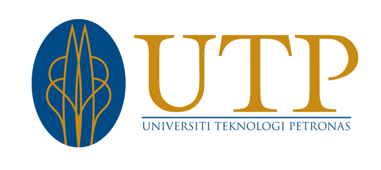

Education
Computer Science
Ahmadu Bello University, Zaria · 2021
First Class Degree
04 / Academic Portfolio
A growing academic dossier built around UTP teaching, course records and my MSc in Computer Science by Research.
What I’ve taught
The teaching-hours counter and course records remain editable from one data file, so you can fill in the real values later without redesigning the page.

Universiti Teknologi PETRONAS · MalaysiaEducation
Ahmadu Bello University, Zaria · 2021
Industrial training
Ahmadu Bello University, Zaria · 2020
Master in Research
Universiti Teknologi PETRONAS, Malaysia · linking AI and clinical sciences.